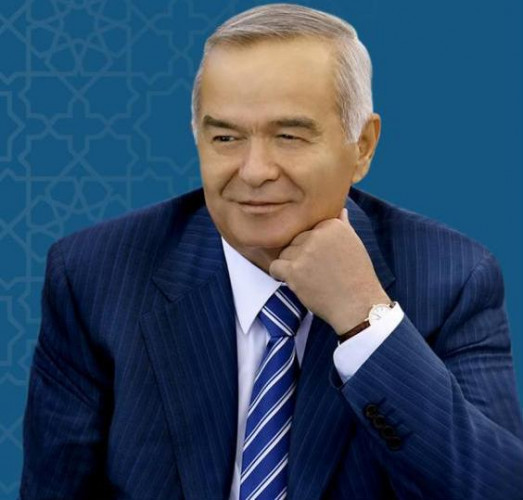

|  | ISLOM ABDUG'ANIYEVICH KARIMOV |
|---|
Islom Abdugʻaniyevich Karimov (1938-yil 30-yanvar, Samarqand shahri — 2016-yil 2-sentabr, Toshkent shahri[1]) — davlat va siyosat arbobi, Oʻzbekiston Respublikasining birinchi prezidenti. Oʻzbekiston Qahramoni (1994). Oʻzbekiston Qurolli Kuchlari Oliy Bosh Qoʻmondoni va 2007-yilgi prezidentlik saylovlari gʻolibi, 2015-yilgi prezidentlik saylovlari gʻolibi. Oʻzbekiston mustaqilligi eʼlon qilingunga qadar OʻzSSR kommunistik partiyasi birinchi kotibi. 1991-yildan umrining oxiriga qadar Oʻzbekiston Prezidenti. Islom Karimov boshchiligida Oʻzbekiston oʻzining Konstitutsiyasiga ega boʻldi, BMTda tan olindi va MDH davlatlari bilan teng huquqli aloqalarni olib borgan.
Mehnat faoliyatini 1960-yilda Toshkent qishloq xoʻjaligi mashinasozligi („Tashselmash“) zavodida master yordamchiligidan boshladi. Soʻng mazkur korxonada master, texnolog. 1961-yildan 1966-yilgacha V. P. Chkalov nomidagi Toshkent aviatsiya ishlab chiqarish birlashmasida muhandis, yetakchi muhandis-konstruktor boʻlib ishladi. 1966-yilda Oʻzbekiston Davlat plan komitetiga ishga oʻtib, bosh mutaxassislikdan respublika Davlat plan komiteti raisining birinchi oʻrinbosarigacha boʻlgan yoʻlni bosib oʻtdi. 1983-yildan Oʻzbekiston SSR Moliya vaziri, 1986-yildan Oʻzbekiston SSR Ministrlar Soveti raisining oʻrinbosari — respublika Davlat plan komitetining raisi. 1986—89-yillarda Oʻzbekiston KP Qashqadaryo viloyat komitetining birinchi kotibi, 1989-yil iyunidan Oʻzbekiston KP MK birinchi kotibi. 1990-yil 24-martda Oʻzbekiston SSR Oliy Kengashining sessiyasida Islom Karimov Oʻzbekiston SSR Prezidenti etib saylandi.
1991-yil 31-avgustda Karimov tarixiy voqea — Oʻzbekiston Respublikasining davlat mustaqilligini eʼlon qildi. 1991-yil 29-dekabrda muqobillik asosida oʻtkazilgan umumxalq saylovida Karimov Oʻzbekiston Respublikasi Prezidenti etib saylandi. 1995-yil 26-martda boʻlib oʻtgan umumxalq referendumi yakunlariga koʻra, Karimovning Prezidentlik vakolati 2000-yilga qadar uzaytirildi. 2000-yil 9-yanvarda u muqobillik asosida Oʻzbekiston Respublikasining Prezidenti etib qayta saylandi. Oʻzbekiston Respublikasi Konstitutsiyasining 89- va 93-moddalariga muvofiq, Karimov ayni vaqtda, Oʻzbekiston Respublikasi Vazirlar Mahkamasining Raisi (1990-1992,), Oʻzbekiston Respublikasi Qurolli Kuchlarining Oliy Bosh qoʻmondonidir.